Vi har samlet nogle af de bedste gratis værktøjer, som kan hjælpe dig med at skabe bedre content, følge trends, planlægge dine opslag og styrke din tilstedeværelse på sociale medier. Her finder du værktøjer, der gør det nemmere at arbejde kreativt, struktureret og effektivt, uden at det behøver koste noget.

Canva kan bruges til at lave opslag til sociale medier, præsentationer, plakater, videoer, invitationer, logoer, flyers og meget mere ved hjælp af færdige skabeloner og simple designværktøjer.
Besøg
Figma bruges til design og prototypearbejde, hvor man kan lave hjemmesider, apps, mockups, wireframes og grafiske layouts
Besøg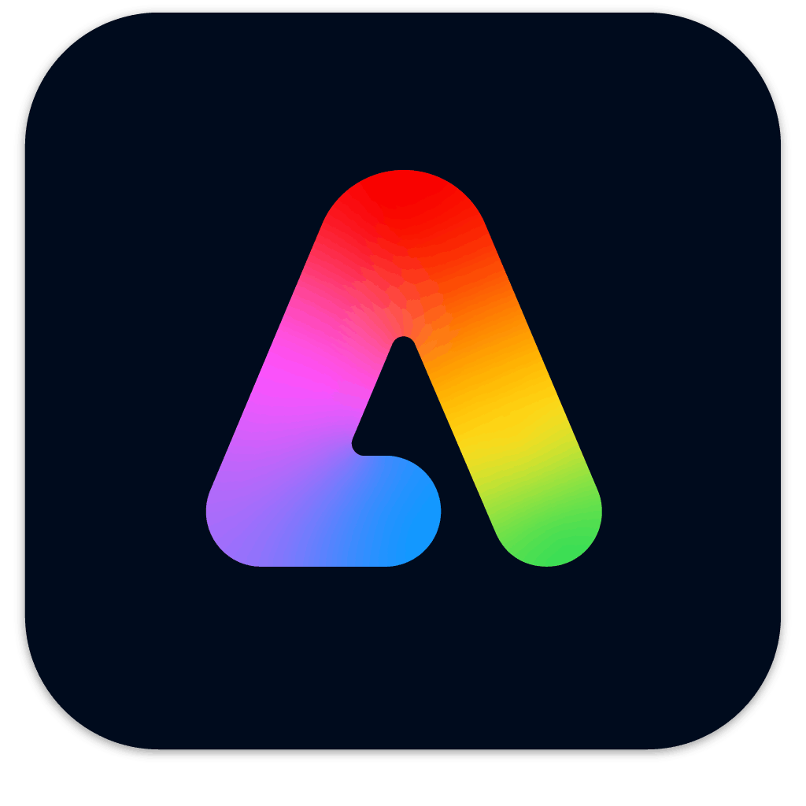
Adobe Express kan bruges til at lave opslag til sociale medier, videoer, plakater, flyers, logoer og andet visuelt content ved hjælp af skabeloner, effekter og enkle designværktøjer.
Besøg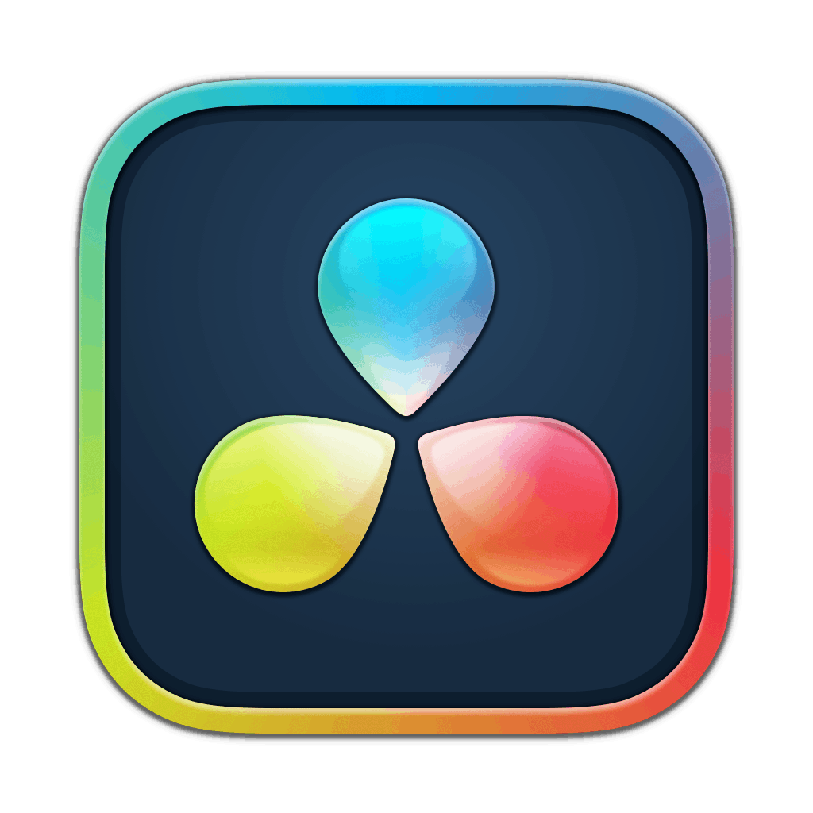
DaVinci Resolve bruges til videoredigering, farvejustering, lydredigering og effekter, og er populært til både korte videoer og mere professionel videoproduktion.
Besøg
CapCut kan bruges til at redigere videoer til TikTok, Instagram og andre sociale medier med effekter, undertekster, templates, overgange og musik.
Besøg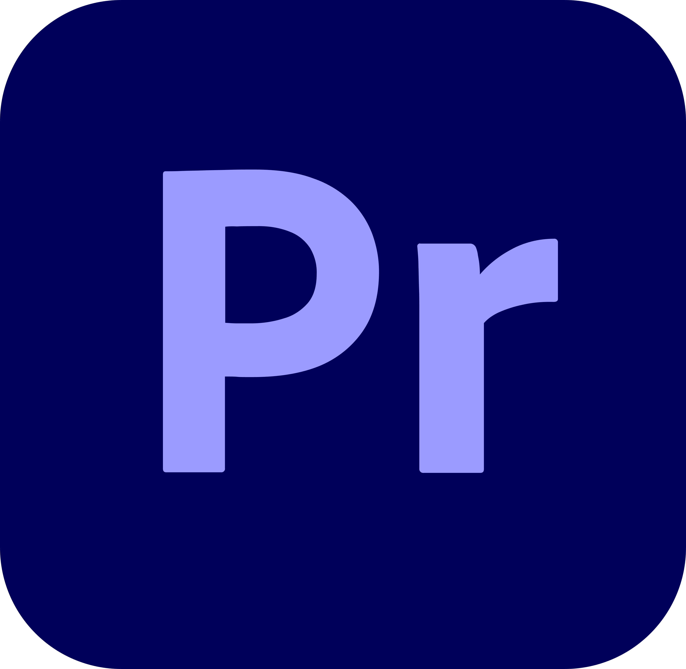
Adobe Premiere Rush er Adobes mobilversion til videoredigering, hvor du nemt kan klippe videoer, tilføje lyd, tekst, effekter og skabe content direkte fra mobilen.
Besøg
Canva kan også bruges til animationer, hvor du nemt kan lave bevægelige opslag, stories, reels og præsentationer med effekter, overgange og animeret tekst direkte i platformen.
Besøg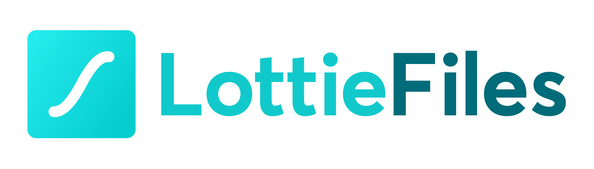
Giver adgang til færdige animationer og motion graphics, som kan bruges i sociale medier, hjemmesider, apps og grafisk content for at skabe mere levende design.
BesøgAdobe Express også bruges til at lave animationer, bevægelige opslag, videoer og animeret tekst til sociale medier ved hjælp af skabeloner, effekter og simple redigeringsværktøjer.
Besøg
Google Fonts er en gratis platform med et stort udvalg af skrifttyper, som kan bruges til sociale medier, hjemmesider, præsentationer og grafisk design.
Besøg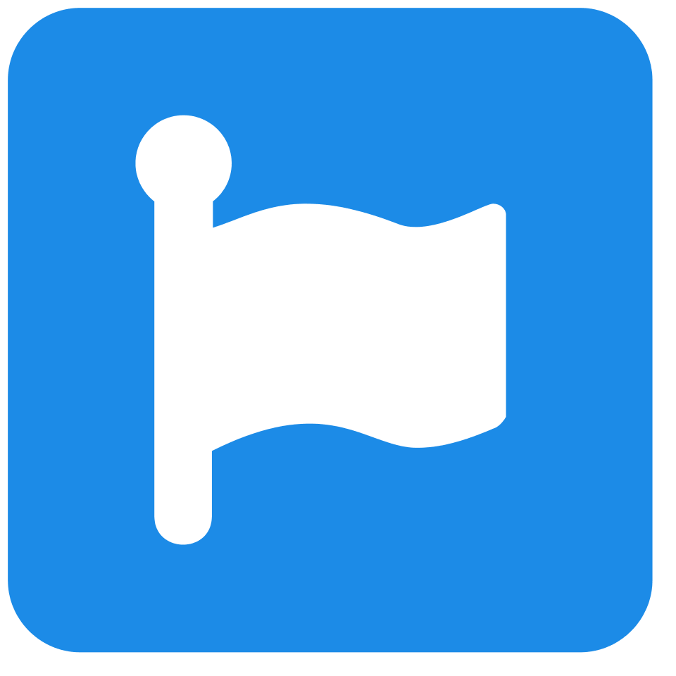
Font Awesome giver adgang til et stort bibliotek af ikoner og symboler, som kan bruges i design, hjemmesider, apps og content til sociale medier.
Besøg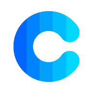
Coolors er et værktøj til at finde og sammensætte farvepaletter, så du nemt kan skabe et flot og sammenhængende visuelt udtryk.
Besøg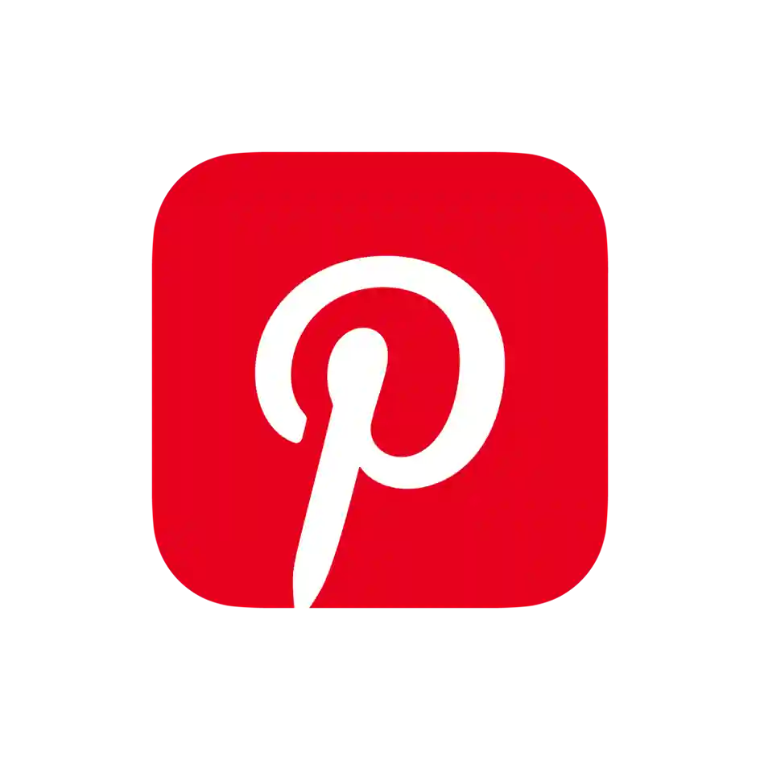
Pinterest bruges til at finde inspiration til design, content, trends, billeder, farver, branding og kreative idéer gennem opslag og moodboards.
Besøg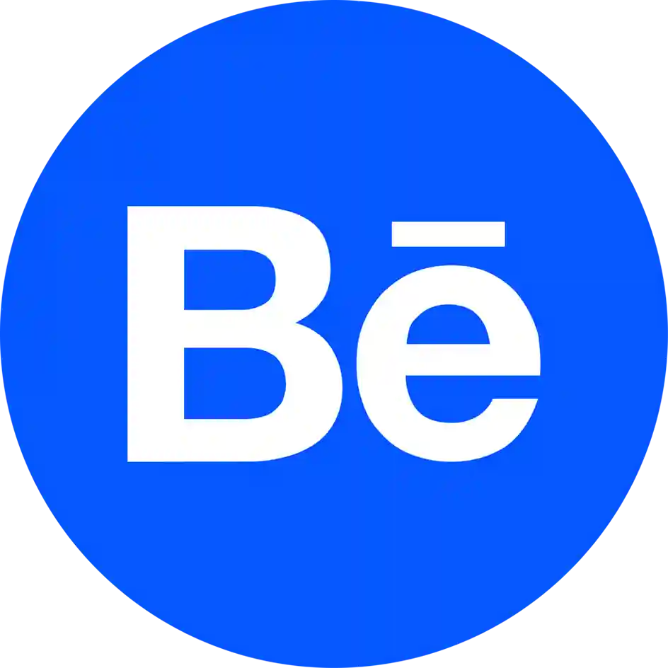
Behance er en platform, hvor kreative deler projekter og designarbejde, og som kan bruges til inspiration inden for grafik, branding, content, webdesign og visuel identitet.
Besøg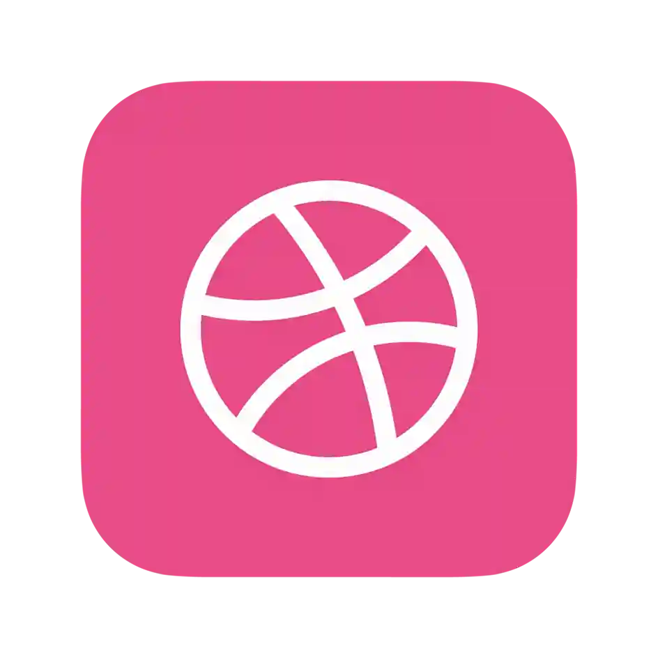
Dribbble er en platform, hvor designere deler kreative projekter og idéer, og som bruges til inspiration inden for webdesign, branding, UI/UX og grafisk design.
Besøg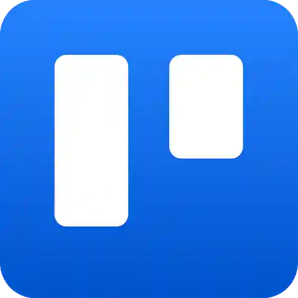
Trello kan bruges til at planlægge content, organisere opgaver, holde styr på deadlines og samle idéer ét sted. Med boards, lister og kort kan du nemt skabe overblik over projekter, samarbejde med andre og strukturere dit arbejde.
Besøg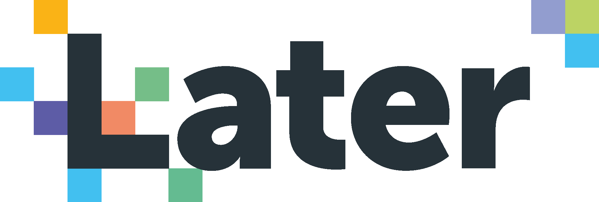
Later kan bruges til at planlægge, organisere og automatisere opslag på sociale medier. Platformen gør det nemt at skabe contentplaner, forhåndsvise dit feed og holde styr på, hvornår dit indhold skal postes.
Besøg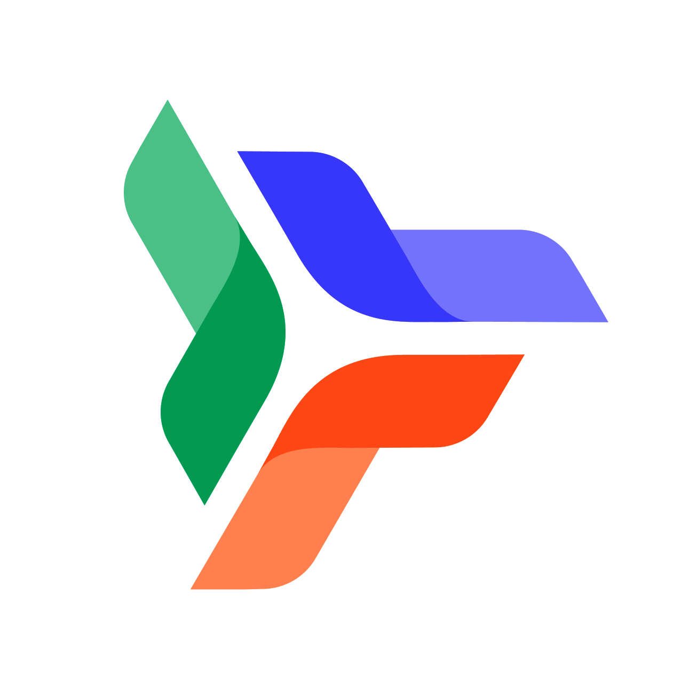
Planable kan bruges til at planlægge, skabe og godkende content til sociale medier. Platformen gør det nemt at samarbejde, få feedback og skabe overblik over opslag og contentplaner før de bliver publiceret.
Besøg